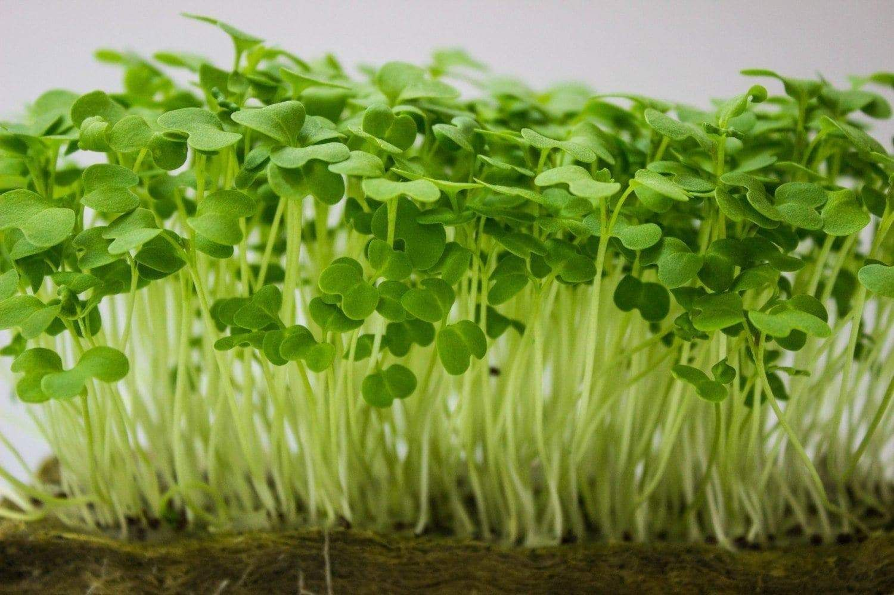

Микрозелень лука имеет высокое содержание сахаров (3%), витаминов (В, С, К, Е, А), минеральных солей и особенно фитонцидов и их положительное воздействие на здоровье человека, относят шнитт-лук к лекарственным растениям.
В зеленых листьях и луковичках лука скороды содержатся аминокислоты, включая гистидин, метионин, триптофан, аргинин, лизин и другие. Богат шнитт-лук углеводами, белками, жирами, микроэлементами, в том числе омолаживающими организм и повышающими иммунитет (селен, цинк, марганец и др.).
Лучше хранится на корню.